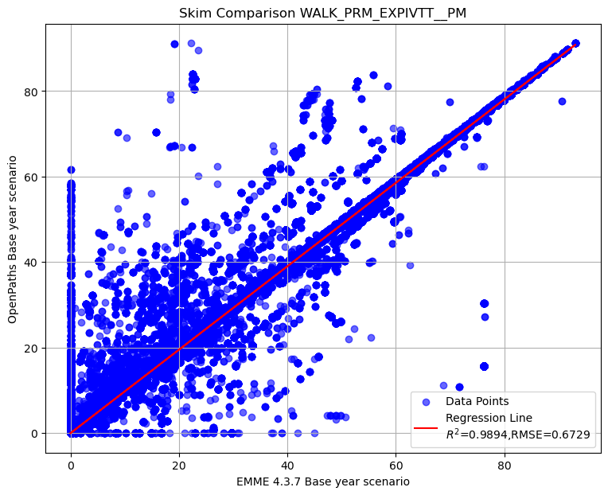
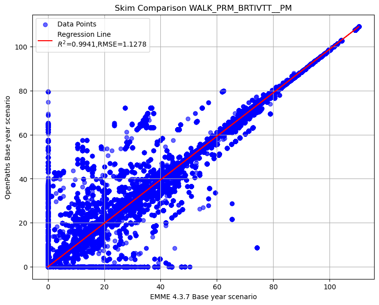

EMME OpenPath: T:\STORAGE-63T\ABM3_EMME_upgrade\2022_v1521_2\output\skims\transit_skims_PM.omx
EMME 4.3.7: T:\STORAGE-63T\2025RP_draft\abm_runs_v2\2022_S0_v2\output\skims\transit_skims_PM.omxPM
User Inptus
Scatterplot Comparison of PM Peak for WALK PRM modes assignment
Scatterplot comparison of PM Peak total actual in-vehicle travel time by walk premium
Intercept: 0.0008
Slope: 1.0038
R² Score: 0.9988
RMSE: 0.9207
Scatterplot comparison of PM Peak actual in-vehicle travel time on LRT mode by walk premium
Intercept: 0.0081
Slope: 1.0023
R² Score: 0.9975
RMSE: 0.6135
Scatterplot comparison of PM Peak actual in-vehicle travel time on commuter rail mode by walk premium
Intercept: 0.0152
Slope: 1.0038
R² Score: 0.9895
RMSE: 0.8673
Scatterplot comparison of PM Peak actual in-vehicle travel time on express bus mode by walk premium
Intercept: 0.0008
Slope: 1.0144
R² Score: 0.9896
RMSE: 0.6803
Scatterplot comparison of PM Peak actual in-vehicle travel time on BRT mode by walk premium
Intercept: 0.0017
Slope: 0.9969
R² Score: 0.9920
RMSE: 1.3282
Summary of transit PM skim comparison (EMME OpenPath - EMME 4.3.7)
To display the top 5 rows of skim comparison (sort by WALK_PRM_TOTALIVTT__PM)
| Origin | Destination | WALK_PRM_TOTALIVTT__PM | WALK_PRM_LRTIVTT__PM | WALK_PRM_CMRIVTT__PM | WALK_PRM_EXPIVTT__PM | WALK_PRM_LTDEXPIVTT__PM | WALK_PRM_BRTIVTT__PM | |
|---|---|---|---|---|---|---|---|---|
| 249540 | 51 | 2191 | 36.660439 | 42.12169 | -52.626923 | 8.855270 | 0.0 | 38.310394 |
| 249575 | 51 | 2226 | 36.660439 | 42.12169 | -52.626923 | 8.855270 | 0.0 | 38.310394 |
| 9075646 | 1835 | 2849 | 34.176659 | 0.00000 | 0.000000 | 71.988834 | 0.0 | -37.812176 |
| 9075693 | 1835 | 2896 | 34.176659 | 0.00000 | 0.000000 | 71.988834 | 0.0 | -37.812176 |
| 9075890 | 1835 | 3093 | 34.176659 | 0.00000 | 0.000000 | 71.988834 | 0.0 | -37.812176 |
Below is the summary of select matrices difference in transti AM skim
count 2.447281e+07
mean -4.720142e-02
std 9.261870e-01
min -2.769609e+01
25% 0.000000e+00
50% 0.000000e+00
75% 0.000000e+00
max 3.666044e+01
Name: WALK_PRM_TOTALIVTT__PM, dtype: float64count 2.447281e+07
mean -1.906455e-02
std 6.141167e-01
min -6.644537e+01
25% 0.000000e+00
50% 0.000000e+00
75% 0.000000e+00
max 4.924223e+01
Name: WALK_PRM_LRTIVTT__PM, dtype: float64count 2.447281e+07
mean -2.138625e-02
std 8.678504e-01
min -5.987768e+01
25% 0.000000e+00
50% 0.000000e+00
75% 0.000000e+00
max 5.921622e+01
Name: WALK_PRM_CMRIVTT__PM, dtype: float64count 2.447281e+07
mean -1.935042e-02
std 6.867709e-01
min -6.093031e+01
25% 0.000000e+00
50% 0.000000e+00
75% 0.000000e+00
max 7.198883e+01
Name: WALK_PRM_EXPIVTT__PM, dtype: float64count 24472809.0
mean 0.0
std 0.0
min 0.0
25% 0.0
50% 0.0
75% 0.0
max 0.0
Name: WALK_PRM_LTDEXPIVTT__PM, dtype: float64count 2.447281e+07
mean 1.259984e-02
std 1.329021e+00
min -6.562264e+01
25% 0.000000e+00
50% 0.000000e+00
75% 0.000000e+00
max 7.445815e+01
Name: WALK_PRM_BRTIVTT__PM, dtype: float64Let’s check the records with difference in WALK_PRM_LRTIVTT__PM greater than 45
| Origin | Destination | WALK_PRM_TOTALIVTT__PM | WALK_PRM_LRTIVTT__PM | WALK_PRM_CMRIVTT__PM | WALK_PRM_EXPIVTT__PM | WALK_PRM_LTDEXPIVTT__PM | WALK_PRM_BRTIVTT__PM | |
|---|---|---|---|---|---|---|---|---|
| 245166 | 50 | 2764 | 11.607300 | 49.242229 | -52.626923 | -38.887947 | 0.0 | 53.879940 |
| 249828 | 51 | 2479 | 23.040176 | 49.242229 | -59.216217 | 0.000000 | 0.0 | 33.014162 |
| 344104 | 70 | 2762 | 14.906464 | 49.242229 | -49.327763 | -38.887947 | 0.0 | 53.879940 |
| 11823386 | 2391 | 57 | 24.189674 | 49.242229 | -53.288387 | -26.308313 | 0.0 | 54.544151 |
| 11843170 | 2395 | 53 | 17.792824 | 45.959414 | -55.885838 | 0.000000 | 0.0 | 27.719250 |
| 12713842 | 2571 | 53 | 25.131012 | 49.242229 | -59.877682 | 0.000000 | 0.0 | 35.766468 |
| 12862252 | 2601 | 53 | 25.131012 | 49.242229 | -59.877682 | 0.000000 | 0.0 | 35.766468 |
| 12936457 | 2616 | 53 | 25.131012 | 49.242229 | -59.877682 | 0.000000 | 0.0 | 35.766468 |
| 13040344 | 2637 | 53 | 25.131012 | 49.242229 | -59.877682 | 0.000000 | 0.0 | 35.766468 |
| 13055185 | 2640 | 53 | 25.131012 | 49.242229 | -59.877682 | 0.000000 | 0.0 | 35.766468 |
| 13164019 | 2662 | 53 | 25.131012 | 49.242229 | -59.877682 | 0.000000 | 0.0 | 35.766468 |
| 13282747 | 2686 | 53 | 24.123199 | 49.242229 | -59.877682 | 0.000000 | 0.0 | 34.758652 |
| 13653772 | 2761 | 53 | 25.131012 | 49.242229 | -59.877682 | 0.000000 | 0.0 | 35.766468 |
| 13658719 | 2762 | 53 | 25.131012 | 49.242229 | -59.877682 | 0.000000 | 0.0 | 35.766468 |
| 13668613 | 2764 | 53 | 25.131012 | 49.242229 | -59.877682 | 0.000000 | 0.0 | 35.766468 |
| 13673560 | 2765 | 53 | 25.131012 | 49.242229 | -59.877682 | 0.000000 | 0.0 | 35.766468 |
| 13678507 | 2766 | 53 | 25.131012 | 49.242229 | -59.877682 | 0.000000 | 0.0 | 35.766468 |
| 13688401 | 2768 | 53 | 24.123199 | 49.242229 | -59.877682 | 0.000000 | 0.0 | 34.758652 |
| 14232575 | 2878 | 57 | 14.911346 | 45.959414 | -55.885838 | 0.000000 | 0.0 | 24.837776 |
| 14291939 | 2890 | 57 | 14.911346 | 45.959414 | -55.885838 | 0.000000 | 0.0 | 24.837776 |
| 14356250 | 2903 | 57 | 14.911346 | 45.959414 | -55.885838 | 0.000000 | 0.0 | 24.837776 |
| 14697593 | 2972 | 57 | 14.911346 | 45.959414 | -55.885838 | 0.000000 | 0.0 | 24.837776 |
| 14786639 | 2990 | 57 | 14.911346 | 45.959414 | -55.885838 | 0.000000 | 0.0 | 24.837776 |
| 15058724 | 3045 | 57 | 14.896111 | 45.959414 | -55.885838 | 0.000000 | 0.0 | 24.822529 |
| 15078512 | 3049 | 57 | 14.896111 | 45.959414 | -55.885838 | 0.000000 | 0.0 | 24.822529 |
| 15548477 | 3144 | 57 | 14.896111 | 45.959414 | -55.885838 | 0.000000 | 0.0 | 24.822529 |
Let’s check the records with difference in WALK_PRM_LRTIVTT__PM less than -50
| Origin | Destination | WALK_PRM_TOTALIVTT__PM | WALK_PRM_LRTIVTT__PM | WALK_PRM_CMRIVTT__PM | WALK_PRM_EXPIVTT__PM | WALK_PRM_LTDEXPIVTT__PM | WALK_PRM_BRTIVTT__PM | |
|---|---|---|---|---|---|---|---|---|
| 91284 | 19 | 2239 | 8.834389 | -53.380180 | 59.216217 | 27.523053 | 0.0 | -24.524701 |
| 91290 | 19 | 2245 | 8.831398 | -53.380180 | 59.216217 | 27.154952 | 0.0 | -24.159592 |
| 91365 | 19 | 2320 | 8.839058 | -53.380180 | 59.216217 | 27.527721 | 0.0 | -24.524701 |
| 96231 | 20 | 2239 | 8.834389 | -53.380180 | 59.216217 | 27.523053 | 0.0 | -24.524701 |
| 96237 | 20 | 2245 | 8.831398 | -53.380180 | 59.216217 | 27.154952 | 0.0 | -24.159592 |
| ... | ... | ... | ... | ... | ... | ... | ... | ... |
| 15831519 | 3201 | 1120 | -22.283142 | -51.091007 | -33.585876 | 0.000000 | 0.0 | 62.393745 |
| 15880989 | 3211 | 1120 | -22.283142 | -51.091007 | -33.585876 | 0.000000 | 0.0 | 62.393745 |
| 15895830 | 3214 | 1120 | -22.283142 | -51.091007 | -33.585876 | 0.000000 | 0.0 | 62.393745 |
| 15979929 | 3231 | 1120 | -15.078003 | -51.091007 | -33.585876 | 0.000000 | 0.0 | 69.598877 |
| 16177809 | 3271 | 1120 | -22.283142 | -51.091007 | -33.585876 | 0.000000 | 0.0 | 62.393745 |
212 rows × 8 columns
Choosing top 25 of WALK_PRM_TOTALIVTT__PM| Origin | Destination | WALK_PRM_TOTALIVTT__PM | |
|---|---|---|---|
| 5459778 | 1104 | 3238 | -27.446434 |
| 5459782 | 1104 | 3242 | -27.446434 |
| 5598298 | 1132 | 3242 | -27.446434 |
| 5598294 | 1132 | 3238 | -27.446434 |
| 5598196 | 1132 | 3140 | -27.446434 |
| 5459873 | 1104 | 3333 | -27.446434 |
| 5459863 | 1104 | 3323 | -27.446434 |
| 5459857 | 1104 | 3317 | -27.446434 |
| 5459846 | 1104 | 3306 | -27.446434 |
| 5459838 | 1104 | 3298 | -27.446434 |
| 5459794 | 1104 | 3254 | -27.446434 |
| 5459791 | 1104 | 3251 | -27.446434 |
| 5598307 | 1132 | 3251 | -27.446434 |
| 5459680 | 1104 | 3140 | -27.446434 |
| 7205971 | 1457 | 3140 | -27.446609 |
| 7206164 | 1457 | 3333 | -27.446609 |
| 7206154 | 1457 | 3323 | -27.446609 |
| 7206148 | 1457 | 3317 | -27.446609 |
| 7206137 | 1457 | 3306 | -27.446609 |
| 7206129 | 1457 | 3298 | -27.446609 |
| 7206085 | 1457 | 3254 | -27.446609 |
| 7206082 | 1457 | 3251 | -27.446609 |
| 7206073 | 1457 | 3242 | -27.446609 |
| 7206069 | 1457 | 3238 | -27.446609 |
| 8792890 | 1778 | 2072 | -27.696087 |